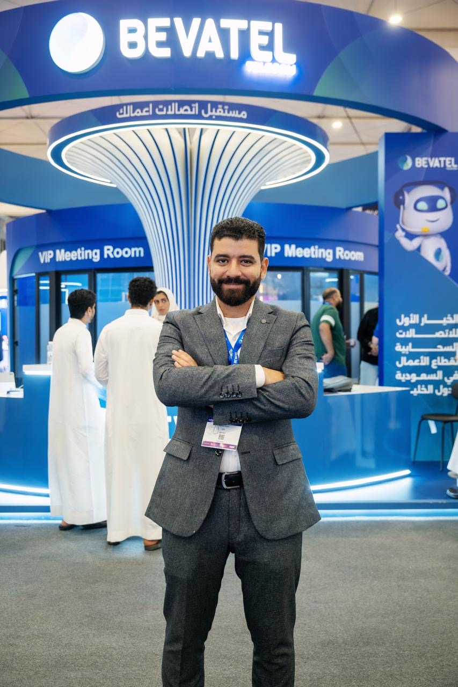

With more than 13 years across finance and accounting, my experience covers FP&A, budgeting and forecasting, cost control, cash flow management, IFRS, ERP implementation, internal controls and management reporting.
My objective is to build finance functions that are accurate, fast and commercially relevant — giving management a clearer view of performance and the confidence to act.
Strong finance teams combine control with insight: reliable numbers, clear accountability and analysis that leads to action.
LocationAl Khobar, Saudi Arabia
Current ScopeGroup financial oversight across six companies and multiple sectors.
Core FocusFP&A, financial control, working capital, IFRS and transformation.

